40
UNIDADE 2 - CAPÍTULO 1
UNIDADE 2 - Operações envolvendo números positivos e negativos
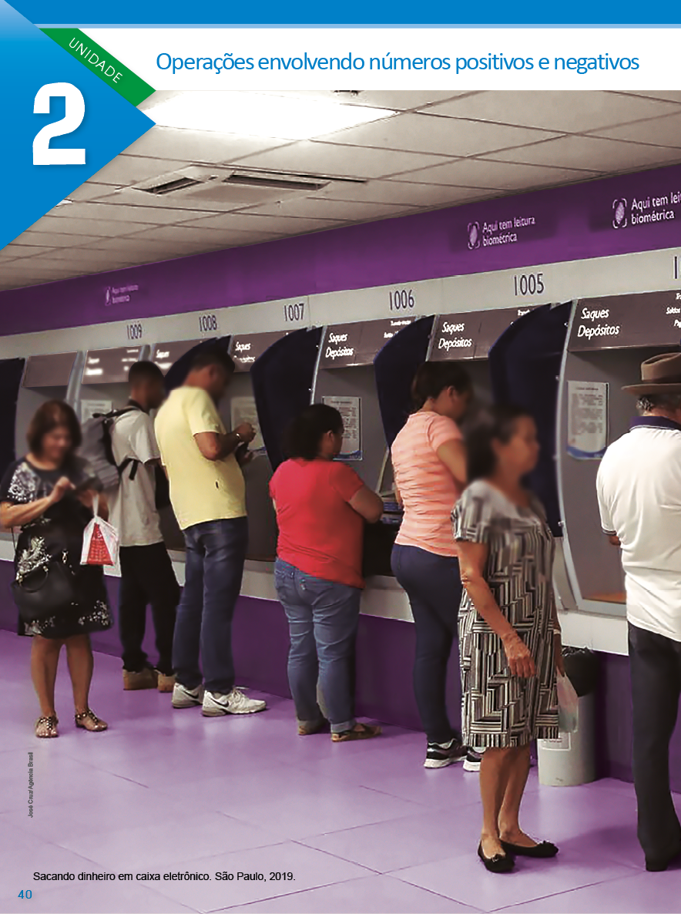41
UNIDADE 2 - CAPÍTULO 1
É comum as pessoas retirarem um extrato bancário para fazer o acompanhamento das transações financeiras de suas contas bancárias
A seguir, temos um exemplo de um extrato bancário que mostra as transações financeiras que ocorreram em um determinado período.
![Extrato bancário de transações financeiras em um papel cor de creme. No canto superior esquerdo: Extrato. Período: 02/02/2022 a 15/02/2022. Data/Hora: 15/02/2022 às 14:35h. O extrato está dividido em oito linhas. Linha 1: Data. Histórico. Valores. Saldo R$. Linha 2: 02/02/2022. Saldo Anterior. Espaço em branco. 256,30. Linha 3: 07/02/2022. TED diferente Titularidade. 1.575,00. 1.831,30. Linha 4: 10/02/2022. Débito contribuição Previdência. Em vermelho menos 72,80. 1.758,50. Linha 5: 10/02/2022 Débito Imobiliária. Em vermelho menos 850,00. 908,50. Linha 6: 12/02/2022. Débito Supermercado. Em vermelho menos 389,33. 519,17. Linha 7: 12/02/2022. Tarifa mensalidade Pacote de janeiro/2022. Em vermelho menos 6,50. 512,67. Linha 8: 15/02/2022. Débito Concessionária. Em vermelho menos 748,50. Em vermelho menos 235,83.](../../resources/images/unidade2/capitulo1/imagem2.PNG)
CONVERSE
1. Observando o extrato bancário, o que representam os números em vermelho e preto na coluna de valores?
2. Como podemos encontrar os valores que estão representados na coluna saldo?
3. No dia 15/02/2022, o saldo na conta bancária era positivo ou negativo? O que significa este valor?
42
UNIDADE 2 - CAPÍTULO 1
CAPÍTULO 1 - Adição e subtração envolvendo números positivos e negativos
Adição envolvendo números positivos e negativos
Lages, SC, 2017.
Em um dia de inverno na cidade de Lages, a temperatura era de 3ºC no início da manhã. Às 11h, a temperatura havia subido 4ºC. Qual era a temperatura nesse horário?

1. Troque ideias com um colega e verifiquem por meio de qual operação podemos calcular a temperatura das 11h da manhã. Representem esta operação.
a) Agora, representem esta operação utilizando a reta numérica.
A situação acima foi representada por meio de uma adição.
Ao adicionarmos dois números positivos, adicionamos os seus módulos e o resultado é positivo.
Vejamos, a seguir, outras situações.
43
UNIDADE 2 - CAPÍTULO 1
Situação 1
Ao anoitecer, no inverno da cidade de Montreal, no Canadá, os termômetros registravam - 1,5ºC. Durante a noite, a temperatura baixou 4ºC. Qual foi a temperatura registrada durante a noite?
Podemos representar esta situação por meio de uma adição de dois números negativos:
(- 1,5) + (- 4) = - 5,5
Montreal, Canadá, 2018.
Representando na reta numérica temos:
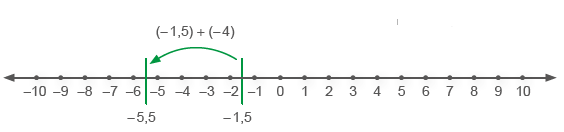A partir do - 1,5, andamos 4 unidades para a esquerda na reta numérica, chegando ao número que corresponde a - 5,5.
A temperatura em Montreal durante a noite foi de - 5,5ºC.
Ao adicionar parcelas de números negativos, adicionamos os seus módulos e o resultado é negativo.
Situação 2
Durante a madrugada na cidade de Edimburgo, capital da Escócia, a temperatura era de - 2ºC. Até o meio-dia, a temperatura aumentou 7ºC. Qual foi a temperatura registrada pelos termômetros nessa cidade ao meio-dia?
Podemos representar esta situação por meio de uma adição em que uma das parcelas é um número negativo e a outra um número positivo:
(- 2) + (+ 7) = +5
Edimburgo, Escócia, 2019.
Representando na reta numérica temos:
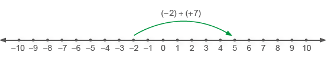A partir de - 2 andamos 7 unidades para a direita na reta numérica, chegando ao ponto + 5.
A temperatura registrada pelos termômetros ao meio-dia foi de 5ºC.
44
UNIDADE 2 - CAPÍTULO 1
Situação 3
O Arco do Triunfo na Avenida Champs de Elyssés. Paris, França, 2021.
Ao anoitecer, na cidade de Paris, os termômetros marcavam 2ºC. Durante a noite, a temperatura baixou 5ºC. Qual foi a temperatura registrada pelos termômetros durante a noite?
Podemos representar esta situação por meio de uma adição em que uma das parcelas é um número positivo e a outra um número negativo:
(+2) + (-5) = -3
Representando na reta numérica temos:
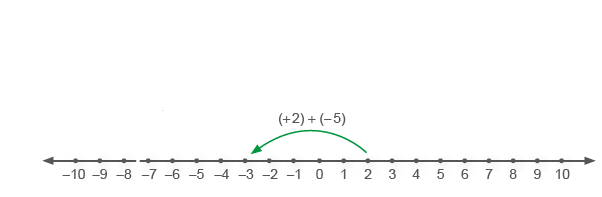A partir do + 2 deslocamos 5 unidades para a esquerda na reta numérica, chegando ao ponto - 3.
A temperatura registrada pelos termômetros durante a noite foi de - 3ºC.
Quando adicionamos duas parcelas em que um número é positivo e o outro é negativo, devemos subtrair os seus módulos e o sinal do resultado será igual ao sinal do número de maior módulo.
Observe outros exemplos de adições envolvendo números negativos:
a) (+5,6) + (-7,5) = -1,9
b) (-0,5) + (-8) = -8,5
c) \(-\dfrac{1}{5} + \dfrac{1}{4} = - \dfrac{4}{20} + \dfrac{5}{20} = \dfrac{1}{20}\)
Quando adicionamos dois números que são opostos, o resultado é igual a zero. Observe:
a) (+7) + (-7) = 0
b) (-8,1) + (+8,1) = 0
c) \(\left(-\dfrac{1}{6}\right) + \left(+\dfrac{1}{6}\right) =0\)
As adições representadas nas situações anteriores podem ser escritas de uma forma mais simples. Observe:
45
UNIDADE 2 - CAPÍTULO 1
(-1,5) + (-4) = -1,5 - 4 = -5,5
(-2) + (+7) = -2 + 7 = +5
(+2) + (-5) = 2 - 5 = -3
Em uma adição envolvendo números positivos e negativos, a ordem das parcelas não altera a soma.
Adição com mais de duas parcelasMárcia retirou um extrato de sua conta bancária para saber os movimentos financeiros de uma determinada semana. No início da semana, seu saldo era de R$ 250,00. Dois dias depois, ela pagou a fatura da conta de luz e de telefone nos valores de R$ 82,35 e R$ 47,53, respectivamente. Após quatro dias, ela pagou a fatura de água no valor de R$ 56,00 e fez um depósito de R$ 120,00. Ao final dessa semana qual era o saldo da conta de Márcia?
Representando esta situação por meio de uma adição, temos:
(+250) + (-82,35) + (-47,53) + (-56) + (+120)
Para sabermos o saldo ao final da semana, vamos resolver a adição de 5 parcelas de duas formas diferentes:
1.° Podemos resolver as adições na ordem em que aparecem na expressão numérica.
(+250) + (-82,35) + (-47,53) + (-56) + (+120) =
= (+167,65) + (-47,53) + (-56) + (+120) =
= (+120,12) + (-56) + (+120) =
= (64,12) + (+120) =
= 184,12
2.° Podemos agrupar os valores que representam um débito (valores negativos) e os valores que representam um crédito (valores positivos) e depois realizar a adição.
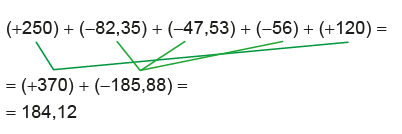Em uma adição envolvendo números positivos e negativos podemos associar as parcelas de diferentes maneiras mantendo o resultado
46
UNIDADE 2 - CAPÍTULO 1
ENCONTRE SOLUÇÕES
1. Um mergulhador estava a 4,5 m abaixo do nível do mar e resolveu descer mais 2 m de profundidade para observar alguns animais marinhos. Quantos metros o mergulhador atingiu em relação ao nível do mar? Em seu caderno, represente essa situação por meio de uma adição e depois a resolva.
2. Um elevador estava no 21.º andar de um edifício e desceu 23 andares até o estacionamento. Represente com um número inteiro o andar em que o elevador parou em relação ao térreo.
3. Em seu caderno, calcule:
a) (- 7) + (- 5)
b) (+ 8) + (- 12)
c) (- 10) + (+ 5)
d) (+ 15) + (- 9)
e) (- 22) + (- 17)
f) (- 157) + (+ 157)
g) (- 43) + (+ 25)
h) (+ 28) + (- 30)
i) (+ 19) + (- 81)
j) (- 9) + (+ 63)
k) (- 270) + (+ 438)
l) (+ 45) + (+ 76)
4. No gráfico abaixo tem-se representado o resultado financeiro, por semestre, dos anos de 2021 e 2022 de uma empresa.
![Gráfico de barras verticais, intitulado: Resultados financeiros. As barras verticais representam o resultado financeiro de uma empresa, por semestre. Eixo horizontal, referente a semestres, da esquerda para direita, com início no 1º semestre de 2021 e término no 2º semestre de 2022. Eixo vertical, referente a valores em milhões de reais, apresentados em escala de 1 milhão, a partir da base, identificada pelo 0, o gráfico se divide em duas partes, superior com valores positivos, com início no 0 e término em 6 milhões, e inferior com valores negativos, com início no zero e término no menos 4 milhões. No primeiro semestre de 2021, uma barra amarela, demonstra o resultado de 5 milhões; no segundo semestre de 2021, uma barra vermelha, voltada para baixo, mostra o resultado negativo de menos 3 milhões; no primeiro semestre de 2022, uma barra verde, também voltada para baixo, deixa evidente mais um resultado negativo, dessa vez de menos 2 milhões e no segundo semestre de 2022, uma barra azul, demonstra o resultado de 3 milhões](../../resources/images/unidade2/capitulo1/imagem12.PNG)
a) Em qual semestre a empresa teve maior lucro? E maior prejuízo?
b) Ao final do ano de 2021, a empresa teve lucro ou prejuízo?
c) Considerando-se apenas o período em que a empresa teve prejuízo, em qual semestre o prejuízo foi menor?
d) Ao final dos dois anos, esta empresa teve um saldo positivo ou negativo? De quanto?
UNIDADE 2 - CAPÍTULO 1
47
5. Márcio retirou um extrato de sua conta bancária para acompanhar as últimas transações financeiras realizadas, porém na coluna que indicava o saldo houve uma falha e não saiu a impressão. Em seu caderno, copie o extrato a seguir e complete com o saldo que ele ficou após cada uma das transações financeiras realizadas. Ao final do período o saldo era positivo ou negativo?

![Tabela intitulada “Extrato” com quatro colunas e dez linhas. As colunas são Data, Histórico, Valores e Saldo R$. Apenas a primeira linha da coluna saldo está preenchida.
A primeira linha, de 30/01/2022, tem o histórico de saldo anterior, valor zero e saldo de 126,65.
A segunda linha, de 30/01/2022, tem o histórico de TED diferente titularidade, no valor de 1.867,11.
A terceira linha, de 02/02/2022, tem o histórico de débito contribuição previdência, no valor de menos 49,62.
A quarta linha, de 03/02/2022, tem o histórico de pagamento conta celular em canais de internet, no valor de menos 148,99.
A quinta linha, de 10/02/2022, tem o histórico de tarifa mensalidade janeiro/2022, no valor de menos 47,00.
A sexta linha, de 10/02/2022, tem o histórico de emissão de DOC, no valor de menos 1.000,00.
A sétima linha, de 10/02/2022, tem o histórico de tarifa emissão DOC 10/02/2022, no valor de menos 8,70.
A oitava linha, de 18/02/2022, tem o histórico de débito título de capitalização, no valor de menos 57,56.
A nona linha, de 18/02/2022, tem o histórico de débito aut. telefone e celular, no valor de menos 90,05.](../../resources/images/unidade2/capitulo1/imagem13.PNG)
6. Calcule:
a) (- 3) + (- 10) + (+ 7) + (+ 12) + (- 8)
b) (- 11) + (+ 5) + (- 21) + (- 4)
c) (+ 14) + (+ 9) + (- 16) + (- 18) + (+ 2)
d) (- 7) + (+ 12) + (+ 7) + (- 34) + (- 12)
e) (- 45) + (+ 9) + (- 13) + (+ 45) + (+ 10)
7. Resolva no caderno:
a) (− 9,45) + (− 2,36)
b) \(\left(-\dfrac{1}{7}\right) + \left(+\dfrac{2}{3}\right)\)
c) (− 2,58) + (+ 6,17)
d) \(\left(-\dfrac{3}{5}\right) + \left(\dfrac{3}{5}\right)\)
e) \(\left(\dfrac{1}{5}\right) + \left(+\dfrac{3}{4}\right)\)
f) \(\left(-10\right) + \left(-\dfrac{1}{2}\right)\)
g) 0 + \(\left(\dfrac{5}{7}\right)\)
h) \(\left(-\dfrac{1}{2}\right) + \left(-\dfrac{1}{3}\right)\)
i) \(\left(\dfrac{3}{4}\right) + \left(-\dfrac{1}{5}\right)\)
8. Resolva as expressões abaixo em seu caderno:
a) \(\left(+\dfrac{2}{5}\right) + \left(\dfrac{1}{2}\right) + \left(-\dfrac{3}{10}\right)\)
b) (- 43) + (- 1,37) + (- 9,6) + (3,8)
c) \(\left(\dfrac{3}{4}\right) + \left(-\dfrac{1}{2}\right) + \left(\dfrac{1}{6}\right)\)
d) \(\left(-\dfrac{1}{5}\right)\) + (+ 0,2) + (- 3)
48
UNIDADE 2 - CAPÍTULO 1
Subtração envolvendo números positivos e negativos
Uma empresa representou seus resultados financeiros, por trimestre, do último ano por meio de um gráfico de barras. Observe:
![Gráfico de barras verticais. Resultados Financeiros. Eixo horizontal, referente aos períodos, apresentados em: Primeiro trimestre, Segundo trimestre, Terceiro Trimestre e Quarto Trimestre. Eixo vertical, referente a valores em milhões de reais, apresentados em escala de 1 milhão, a partir da base, identificada pelo 0, o gráfico se divide em duas partes, superior com valores positivos, com início no 0 e término em 6 milhões, e inferior com valores negativos, com início no zero e término no menos 4 milhões. No primeiro trimestre, uma barra amarela, demonstra o resultado de 6 milhões; no segundo trimestre, uma barra vermelha, demonstra o resultado de 4 milhões; no terceiro trimestre, uma barra verde voltada para baixo, com a marca negativa de menos 2 milhões. O quarto trimestre deixa evidente mais um resultado negativo, dessa vez de menos 3 milhões.](../../resources/images/unidade2/capitulo1/imagem14.PNG)
De acordo com o gráfico, a empresa teve lucro nos dois primeiros trimestres e prejuízo nos demais trimestres do ano. Então, percebe-se que no decorrer do ano houve uma queda nos resultados financeiros desta empresa.
Agora, vamos calcular a diferença entre os dois primeiros trimestres do ano, lembrando que os resultados são dados em milhões de reais.
(+ 6) - (+ 4) = + 2
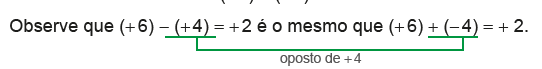A diferença entre o 1.º trimestre e o 2.º trimestre foi de 2 milhões de reais.
Vejamos a diferença entre os resultados do 2.º trimestre e 3.º trimestre desse ano.
(+ 4) - (- 2) = + 6
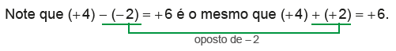49
UNIDADE 2 - CAPÍTULO 1
Agora vamos calcular a diferença entre o 3.º e 4.º trimestre.
(- 2) - (- 3) = + 1
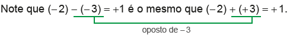Observe que a subtração de dois números é o mesmo que adicionar o primeiro número com seu oposto.
Para calcular a diferença entre dois números, devemos adicionar o primeiro número com o seu oposto.
Ao realizarmos a subtração entre dois números, podemos simplificar a sua escrita eliminando os parênteses.
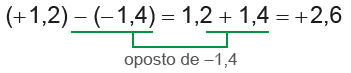► (- 3,5) - (+ 4,1) = - 3,5 - 4,1 = - 7,6
► \(\left(-\dfrac{1}{2}\right) - \left(-\dfrac{1}{3}\right) = -\dfrac{1}{2} + \dfrac{1}{3} = -\dfrac{3}{6} + \dfrac{2}{6} = -\dfrac{1}{6}\)
► \(\left(-\dfrac{4}{5}\right) - \left(+\dfrac{1}{7}\right) = -\dfrac{28}{35} - \dfrac{5}{35} = -\dfrac{33}{35}\)
Também podemos utilizar uma calculadora para realizar a adição e subtração de números positivos e negativos.
► Vamos adicionar (- 7) + (- 11) usando uma calculadora simples.
1. Agora é sua vez! Utilizando uma calculadora simples, calcule:
a) (- 35) + (- 45)
b) (- 9) + (- 22)
c) (- 19) + (- 67)
d) (- 147) + (- 35)
e) (- 87) + (- 7)
f) (- 78) + (- 23) + (- 54)
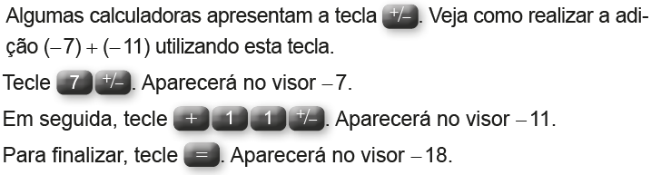50
UNIDADE 2 - CAPÍTULO 1
2. Agora, usando uma calculadora que tenha a tecla +/- , calcule:
a) (- 28) + (- 79)
b) (- 47) + (- 96)
c) (- 175) + (- 236)
d) (- 249) + (- 383)
e) (- 285) + (- 29) + (- 71)
f) (- 106) + (- 90) + (- 17)
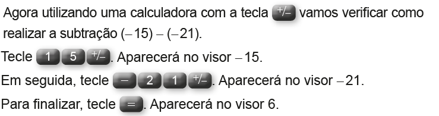3. Usando uma calculadora que tenha a tecla +/- , calcule:
a) (- 379) - (- 285)
b) (- 209) - (- 452)
c) (- 108) - (- 528)
d) (- 807) - (- 254)
e) (- 19) - (- 108) - (- 237)
f) (- 326) - (- 141) - (- 95)
ENCONTRE SOLUÇÕES
1. Em seu caderno, calcule:
a) (- 3) - (- 5)
b) (+ 7) - (+ 10)
c) (+ 15) - (+ 15)
d) (+ 22) - (- 7)
e) (- 41) - (- 19)
f) (- 220) - (+ 162)
g) (- 8) - (+ 29)
h) (+ 54) - (- 82)
i) (- 11) - (+ 93)
j) (+ 33) - (- 65)
k) (- 315) - (+ 315)
l) (+ 27) - (+ 27)
2. Eliminando os parênteses, calcule em seu caderno:
a) - 19 + (- 12) - (- 34)
b) 78 - (- 67) + (+ 20) - (+ 16)
c) -44 - 30 - (+ 11) - (- 8) + (+ 17)
d) 100 - 62 + (- 17) - (- 10) - (+ 22)
e) - 33 - (- 7) - (+ 22)
f) 55 - (- 16) + (- 19) - (- 43)
g) 97 + (- 32) - (- 11) - (+ 10) - (- 5)
3. sEm um dia de inverno, a temperatura na cidade de Paris, estava em 4ºC e ao final da noite passou para - 3ºC. De quantos graus foi a variação da temperatura nesse dia?
51
UNIDADE 2 - CAPÍTULO 1
4. O quadro a seguir representa a classificação final do Campeonato Brasileiro de Futebol da série A de 2021. Nele, temos representados os pontos ganhos (P) de cada time, a quantidade de jogos (J), a quantidade de jogos ganhos (V), a quantidade de empates (E), a quantidade de derrotas (D), a quantidade de gols pró (GP) e a quantidade de gols contra (GC). A última coluna deve ser preenchida com o saldo de gols de cada time. Sabendo que S = GP - GC, calcule mentalmente esses valores e anote os resultados em seu caderno.

![Tabela de classificação final do Campeonato Brasileiro de Futebol - Série A de 2021. Tabela com nove colunas e 20 linhas. Título das colunas: classificação, P, J, V, E, D, GP, GC, S. Todas as células da coluna S estão em branco. As quatro primeiras linhas estão destacadas em verde, assim como as quatro últimas estão destacadas em laranja.
Primeira linha: 1º Atlético Mineiro - MG: 84, 38, 26, 6, 6, 67 e 34;
Segunda linha: 2º Flamengo - RJ: 71, 38, 21, 8, 9, 69 e 36;
Terceira linha: 3º Palmeiras - SP: 66, 38, 20, 6, 12, 58 e 43;
Quarta linha: 4º Fortaleza - CE: 58, 38, 17, 7, 14, 44 e 45;
Quinta linha: 5º Corinthians - SP: 57, 38, 15, 12, 11, 40 e 36;
Sexta linha: Red Bull Bragantino - SP: 56, 38, 14, 14, 10, 55, e 46;
Sétima linha: Fluminense - RJ: 54, 38, 15, 9, 14, 38 e 38;
Oitava linha: América - MG: 53, 38, 13, 14, 11, 41 e 37;
Nona linha: Atlético - GO: 53, 38, 13, 14, 11, 33 e 36;
Décima linha: Santos - SP: 50, 38, 12, 14, 12, 35 e 40;
Décima primeira linha: Ceará - CE: 50, 38, 11, 17, 10, 39 e 38;
Décima segunda linha: Internacional - RS: 48, 38, 12, 12, 14, 44 e 42;
Décima terceira linha: São Paulo - SP: 48, 38, 11, 15, 12, 31 e 39;
Décima quarta linha: Athlético Paranaense - PR: 47,38,13,8, 17, 41 e 45;
Décima quinta linha: Cuiabá - MT: 47, 38, 10, 17, 11, 34 e 37;
Décima sexta linha: Juventude - RS: 46, 38, 11, 13, 14, 36 e 44;
Décima sétima linha: Grêmio - RS: 43, 38, 12, 7, 19, 44 e 51;
Décima oitava linha: Bahia - BA: 43, 38, 11, 10, 17, 42 e 51;
Décima nona linha: Sport - PE: 38, 38, 9, 11, 18, 24 e 37;
Vigésima linha: Chapecoense - SC: 15, 38, 1, 12, 25, 27 e 67.
Fonte: CBF, última atualização efetuada em 10/12/2021.](../../resources/images/unidade2/capitulo1/imagem19.PNG)
52
UNIDADE 2 - CAPÍTULO 1
5. Cheque especial é um contrato existente entre um banco e um consumidor para que este tenha disponível em sua conta bancária um crédito de um determinado valor que, caso seja utilizado, deverá ser devolvido acrescido de juros e outros encargos. Você pode observar este serviço no extrato bancário de alguém que possua esse crédito. Nele você poderá identificar uma diferença existente entre o saldo e o valor disponibilizado
Marcela possui esse serviço em sua conta bancária. Seu limite de cheque especial é de R$ 1.000,00. Durante o último mês, Marcela teve algumas despesas não previstas e seu saldo estava negativo em R$ 135,00, utilizando assim o limite do cheque especial. Ainda durante esse mês, dois cheques foram debitados em sua conta, um no valor de R$ 267,50 e outro no valor de R$ 304,00. Ao final do mês, qual era o valor ainda disponível em sua conta bancária?
6. Resolva em seu caderno:
a) (− 6,21) − (− 1,38)
b) \(\left(-\dfrac{1}{8}\right) - \left(+\dfrac{1}{2}\right)\)
c) (− 3,45) − (+ 6,11)
d) \(\left(-\dfrac{2}{5}\right) - \left(\dfrac{1}{3}\right)\)
e) \(\left(\dfrac{1}{7}\right) - \left(-\dfrac{2}{3}\right)\)
f) (-10) - \(\left(-\dfrac{1}{6}\right)\)
g) 0 - \(\left(-\dfrac{9}{5}\right)\)
7. No quadro abaixo, as letras m, n e p representam números. Copie-o em seu caderno e complete-o com os números que faltam.
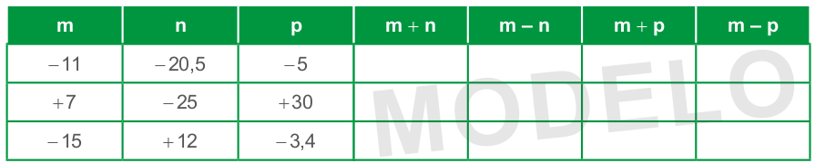53
UNIDADE 2 - CAPÍTULO 1
8. Observe os números inteiros indicados a seguir:
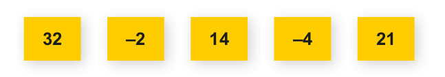
Em seu caderno, elabore uma situação-problema envolvendo as operações de adição e/ou subtração com números inteiros, usando os números acima. Em seguida, peça a um colega que resolva o problema elaborado por você. Juntos, verifiquem se a resolução apresentada está correta.
9. Observe a expressão a seguir: \(\dfrac{1}{2} + 0,7 + \dfrac{1}{4} + 1,5\). Resolva-a em seu caderno e depois conte aos colegas e professor qual estratégia você usou para resolvê-la.
10. Resolva as expressões a seguir em seu caderno:
a) 27 - (12 + 5)
b) -19 - (- 24 + 33) - (5 - 10)
c) (18 - 7) - (10 + 22 - 45)
d) \(\left(+\dfrac{1}{3}\right) - \left(\dfrac{1}{2}\right) + \left(-\dfrac{5}{6}\right)\)
e) (- 23) + (- 2,47) - (- 5,1) - (4,8)
f) \(\left(\dfrac{3}{4}\right) - \left(-\dfrac{1}{3}\right) + \left(\dfrac{5}{12}\right)\)
g) \(\left(-\dfrac{1}{4}\right)\) - (+ 0,4) + (- 2)
11. Quando resolvemos expressões com números fracionários, em geral, verificamos se o resultado obtido é um número fracionário na sua forma irredutível. Uma forma de mostrar se um número fracionário está na sua forma irredutível, ou seja, uma fração que não é possível ser simplificada, é por meio de um fluxograma. Um fluxograma é um esquema que representa o caminho necessário para chegar a uma conclusão.
Observe o fluxograma a seguir que nos mostra se uma fração está na sua forma irredutível.
54
UNIDADE 2 - CAPÍTULO 1
![Fluxograma de processo com uma tomada de decisão. O processo se inicia com o “número fracionário”, segue na vertical com uma seta para a etapa “Encontrar o máximo divisor comum entre o numerador e o denominador”. Outra seta leva à pergunta, dentro de um losango, “Este divisor é diferente de 1?”. Do losango partem duas setas, para a esquerda e para a direita. À esquerda a opção “Sim”, leva à etapa “Simplificamos o número fracionário pelo máximo divisor comum”, da qual sai uma seta para a etapa “Descobrimos”. À direita do losango, a opção “Não”, leva à etapa “O número fracionário está na sua forma irredutível”, da qual sai uma seta para a etapa “Descobrimos”. Fim do processo para as duas decisões.](../../resources/images/unidade2/capitulo1/imagem23.PNG)
Com um colega, escolham um número fracionário e em seus cadernos, usando o fluxograma, verifiquem se o número fracionário está na sua forma irredutível.
12. Observe o fluxograma a seguir:
![Fluxograma de processo com uma tomada de decisão. O processo se inicia com a fração “13 169 avos”, segue na vertical com uma seta para a etapa “Encontrar o máximo divisor comum entre o numerador e o denominador”. Outra seta leva à pergunta, dentro de um losango, “Este divisor é diferente de 1?”. Do losango partem duas setas, para a esquerda e para a direita. À esquerda a opção “Sim”, leva à etapa “Simplificamos o número fracionário pelo máximo divisor comum”, da qual sai uma seta para a etapa “Descobrimos”. À direita do losango, a opção “Não”, leva à etapa “O número fracionário está na sua forma irredutível”, da qual sai uma seta para a etapa “Descobrimos”. Fim do processo para as duas decisões](../../resources/images/unidade2/capitulo1/imagem24.PNG)
Esta fração está na forma irredutível?
13. Em seu caderno, elabore um problema envolvendo adição ou subtração de números racionais. Em seguida, peça a um colega que resolva o problema elaborado por você. Juntos, verifiquem se a resolução apresentada está correta.